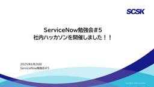
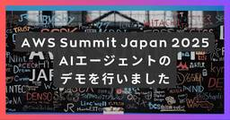
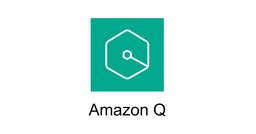

TechHarmony
https://blog.usize-tech.com
TechHarmonyは、SCSK株式会社が運営するエンジニアブログです。SCSKのエンジニア自らがクラウドを中心としたナレッジを積極的にアウトプットすることで社会への還元を行うとともに、更なるスキルアップを目指します。
フィード

ServiceNowを使って社内ハッカソンを開催しました!
TechHarmony
こんにちは、SCSK吉田です。 先日6月下旬、社内勉強会の一環としてServiceNowを使った社内ハッカソンを開催しました！ 今回は社内ハッカソンの開催レポートとなります。 はじめに 社内でハッカソンを実 […]
2日前

【ServiceNow】Knowledge25への参加記録！！その２ ～イベント開始～
TechHarmony
こんにちは！ SCSK株式会社 小鴨です。 最近はひどく暑いですね 正直ラスベガスの方が涼しかったです（笑） そんな自分ですが、今日も Knowledge 25 のご紹介を始めます！！ 前回の記事は準備・到 […]
4日前

Cortex Cloud の REST API を使用してみた
TechHarmony
今回は Prisma Cloud ではなく、Cortex Cloud の API を使用してみようと思います。 Cortex Cloud は2025年度第3四半期後半に一般提供される予定のサービスです。 本記事では、Co […]
4日前

Catoクラウド ユーザーコミュニティ「Cato Circle」を発足しました！
TechHarmony
この度、Catoクラウドのユーザーコミュニティ（ユーザ交流会、ユーザ会）、「Cato Circle（ケイトサークル）」を発足いたしました。そして、Cato Circle についての記念すべき初投稿記事となります。 &nb […]
4日前
Dataformで使用しているGitHubリポジトリ名を変更してみた
TechHarmony
こんにちは。SCSKの磯野です。 Dataformでは、リモートリポジトリをGitHubリポジトリと接続することができます。 Dataformに接続済みのGitHubリポジトリの名称を変更したくなったので、どのような影響 […]
4日前
【CSPM】Prisma Cloudの監査ログをAWSへ外部保管する
TechHarmony
Prisma Cloudはパブリッククラウドやアプリケーションのセキュリティ強化に役立つツールですが、Prisma Cloud自身のセキュリティも考慮する必要があります。例えば、Prisma Cloudの監査ログは適切に […]
4日前
ServiceNowでの多要素認証(MFA)からの除外方法について
TechHarmony
初めまして。 SCSKの吉田拳多です。 今回はServiceNowにおける多要素認証(MFA)の認証方法と、多要素認証(MFA)の除外設定について紹介したいと思います。 本記事は執筆時点(2025年6月)の情報になります […]
5日前

【出展レポート】AWS Summit Japan 2025でAIエージェントのデモを行いました！
TechHarmony
こんにちは。SCSK梅ヶ谷（うめがたに）です。 6月25日（水）、26日（木）に開催されたAWS Summit Japan 2025に出展しました。 今回、SCSKはプラチナスポンサーとして、スポンサーセッションでの事例 […]
5日前
AIを使ってWordPressのアコーディオンパネルをつくる（プラグイン不使用）
TechHarmony
こんにちは！最近倒立で腕立て伏せを試みようと頑張っております、いとさんです。 初めての投稿はgpt-4oとGeminiを使用したWordpress内のアコーディオン実装の工程、成果物を紹介いたします。 基本となるコードは […]
5日前

かわいいゲームをAmazon Q CLIで作る
TechHarmony
本記事は「Amazon Q CLI でゲームを作ろう Tシャツキャンペーン」に向けて執筆した記事です。 こんにちは。最近はサクレパインとガリガリくんが美味しいです。いとさんです。 今回は、滑り込みでAmazon Q CL […]
5日前

【ServiceNow】更新セットプレビュー時のエラー
TechHarmony
こんにちは。SCSKの北川です。 今回はServiceNowの更新セットプレビュー時のエラー対応についてまとめました。 更新セットの移送手順はこちら【ServiceNow】更新セット移送の基本ガイド – TechHarm […]
9日前
【Prisma Cloud】Application Securityを有効化できない時の対処法
TechHarmony
本記事は、Prisma CloudのApplication Securityがサブスクリプションの一覧に表示されず、Application Securityを有効化できない人に有効化する方法をお伝えする記事となっています […]
9日前
MackerelでOracle Databaseを監視してみた
TechHarmony
こんにちは、SCSKの嶋谷です。 これまでに3度SaaS型監視サービスMackerelに関する記事を投稿してきた結果、先日Mackerelアンバサダーを拝命いたしました。今後もアンバサダーとしてMackerelを広めてい […]
9日前
【ServiceNow】一番シンプルなクローン方法
TechHarmony
初めまして。星です。 ServiceNowのクローンのやり方について説明させていただきます。 クローンという方法ひとつ取ってもやり方は様々です。 ここには書かれているのは手法の一つであることにご注意ください。 なぜクロー […]
9日前
【ServiceNow】ナレッジ記事のテンプレートを作成する
TechHarmony
こんにちは SCSKの酒井です。 ServiceNowのナレッジ機能にて、テンプレートを作成する機会があったので、その方法を紹介させていただきます。 本記事は執筆時点（2025年6月）の情報です。最新の情報は製品ドキュメ […]
9日前
【CSPM】Prisma Cloudの権限制御とカスタム権限グループの解説
TechHarmony
本記事ではPrisma Cloudのユーザ権限制御方法と、そこで利用できるカスタム権限グループについて解説します。カスタム権限グループに割り当てることができる権限の一覧も載せていますので、これからPrisma Cloud […]
11日前
【CSPM】Prisma Cloud Release Notesで更新があった機能を紹介（2025年5月）
TechHarmony
はじめに Prisma Cloudでは月に一回アップデートがあります。 内容としては新機能のリリース情報やUI変更のお知らせからAPIの更新情報など多岐にわたりますが、今回は2025年5月に機能更新がいくつかあったので、 […]
11日前
切れ味、使い心地、文句なし！ AWS Summit Japan 2025 SCSKブースのマル秘ノベルティ「貝印の爪切り」をゲットしよう
TechHarmony
こんにちは、SCSK伊藤です。 いよいよAWS Summit Japan 2025が今週となりました。 水曜日は雨天の予報も出ておりますが、足元にお気をつけて幕張メッセにお越しくださいませ。 今年のSCSKの出展内容は以 […]
12日前
【ServiceNow】注文ガイドの実行順序
TechHarmony
こんにちは SCSKの庄司です。 前回、ServiceNowの注文ガイドの基本機能についてご紹介いたしました。 【ServiceNow】注文ガイドの基本注文ガイドとは、複数のアイテムを生成する1つのサービスカタログ要求を […]
13日前
Amazon Q Developer Proをメンバーアカウントで使うには
TechHarmony
SCSK 永見です。 Amazon Q Developerはコード生成などに活用できるAIサービスです。 有料版であるQ Developer Proは、IAM Identity Center(以下、IIC と記載します) […]
13日前
【Azure】Log Analytics ワークスペース上から /var/log/wtmp のログを表示させると文字化けする問題の対処法
TechHarmony
/var/log/wtmp を Log Analytics ワークスペースにそのまま取り込もうとすると、文字化けが発生します。 ネット上に情報が無く、サポートに問い合わせて解決に至りましたので、小ネタですが誰かの助けにな […]
18日前
【エンジニアでなくても簡単に試せる】生成AIで社内ガイドライン検索を実現【Amazon Bedrock】
TechHarmony
「Amazon Bedrock」を使って、サクッと社内ガイドラインの検索システムを構築していきます。APIやpythonとかはよくわからないけど、簡単に生成AIアプリケーションを試してみたい人はぜひ参考にしていただければ […]
18日前
HAクラスター/LifeKeeper用語説明4
TechHarmony
こんにちは、SCSKの前田です。 4回目は、LifeKeeperの内部で使われている用語について説明したいと思います。 1回目・2回目・3回目の用語説明に関しては以下のリンクからどうぞ！ HAクラスター/LifeKeep […]
18日前
HULFT10 × LifeKeeper セミナー開催レポート
TechHarmony
4月16日にセゾンテクノロジーとSCSKの共催による”HULFT10 × LifeKeeper セミナー”を開催いたしました。 今回は、講演内容の概要とセミナーの様子についてご紹介していきます。 セミナー概 […]
20日前
【Catoクラウド】イベントログ（Events）確認方法・2025年版
TechHarmony
Catoクラウドは、マネジメントコンソール（CMA）上の「Events」ページから一通りのイベントログを確認できます。 以前の記事が執筆された2023年8月と比べると、2025年6月現在は主に以下のような新機能が追加され […]
20日前
【CSPM】Prisma Cloud Release Notesで更新があった重要度の高いポリシーを解説（2025年5月）【AWS】
TechHarmony
はじめに Prisma Cloudでは月に一回アップデートがあります。 内容としては新機能のリリース情報やUI変更のお知らせからAPIの更新情報など多岐にわたりますが、今回は2025年5月に検知条件に更新のあった重要度の […]
20日前
ビッグウェーブに乗ってAmazon Q CLIでゲームを作りました。
TechHarmony
本記事は「Amazon Q CLI でゲームを作ろう Tシャツキャンペーン」に向けて執筆した記事です。 皆様こんにちは。好きなゲームは「ELDEN RING」、褪せ人のMasedatiです。 今回は、Amazon Q と […]
20日前
Amazon Q Developerが孤独にゲームを作るまでの軌跡
TechHarmony
本記事は「Amazon Q CLI でゲームを作ろう Tシャツキャンペーン」に向けて執筆した記事です。 こんにちは、ひるたんぬです。 今回は、人間（私）の工数を最小限に抑えるために、Amazon Q Developerだ […]
21日前
期間延長！まだ間に合う！Amazon Q CLIでゲームを作ってTシャツが貰えるキャンペーン！！2025-06-30まで！🎮👕🏃💨
TechHarmony
キャンペーンの期間が2025年6月30日までに延長されていました！ こんにちは。SCSK渡辺(大)です。 学生の時は夜通しでゲームをするくらい好きだったのですが、社会人になってから殆どやらなくなってしまいました。 しかし […]
23日前
Interop Tokyo 2025 1日目 Zabbixブース出展レポート
TechHarmony
こんにちは！SCSK小寺です 昨日からInterop Tokyo 20255が開催されております。 今年もZabbixのブース(6F04)にSCSKも出展しております。 初日の出展の状況を皆さんにご紹介いたします 午前中 […]
23日前
【GoogleCloud】組織の作成および既存プロジェクトの組織への移動方法
TechHarmony
こんにちは。SCSKの松渕です。 検証環境の Google Cloud に組織ポリシー適用しようとしたら、がそもそも組織に所属していなかった。 じゃぁ組織に所属させようと思ったら、以外と面倒くさかった ってこと、皆さんも […]
24日前
Ansibleを使用してNW機器設定を自動化する（PaloAlto-アドレスグループ編①）
TechHarmony
はじめに 当記事は、日常の運用業務（NW機器設定）の自動化により、運用コストの削減 および 運用品質の向上 を目標に 「Ansible」を使用し、様々なNW機器設定を自動化してみようと 試みた記事です。 Ansibleは […]
24日前
AWS CLIでクロスアカウント環境のAmazon CloudFrontのキャッシュを削除
TechHarmony
こんにちは、ひるたんぬです。 6月に入り、雨の降る日が多くなりましたね。梅雨の到来を感じます。 …なぜ、この時期のことを「梅雨（つゆ）」と呼ぶのでしょうか。 梅の実が熟す時期に降る雨だから「梅雨」と書いたところまではなん […]
1ヶ月前
【Zabbix】トリガーアクションでスクリプトを実行する方法
TechHarmony
こんにちは、SCSKの坂木です。 Zabbixで監視はできているけど、障害発生時の対応は手作業…面倒ですよね。 そこで、本ブログではZabbixのトリガーアクションで障害対応を自動化する方法を解説します。 今回はトリガー […]
1ヶ月前
TerraformでGoogle Cloud Monitoringを活用したログ監視を実装してみた
TechHarmony
こんにちは、SCSKの齋藤です。 今回は、Google Cloud Monitoring を活用してログ監視を実装してみました。Terraformを使用して、Cloud WorkflowsやDataformなどのログを監 […]
1ヶ月前
Fivetranを使用して、メールから送られてくるデータをBigQueryに格納してみた
TechHarmony
こんにちは、SCSKの齋藤です。 本記事では、クラウド型データ連携サービスであるFivetranを活用し、BigQueryに効率的にデータを格納する方法について解説します。データエンジニアリングの知識がなくても、Five […]
1ヶ月前
【AWS】AIサービスを使うときのセキュリティ設定
TechHarmony
SCSK永見です。 AI関連のサービスはいまや当たり前になってきていて、活用すれば生産性向上に大きく寄与できます。 一方で心配なのがセキュリティ。万が一入力した情報に機密情報が含まれていて、AIサービス提供者の学習データ […]
1ヶ月前
AWS CDKで実践！ KeyPairのさまざまな実装方法
TechHarmony
AWS CDKを使ってEC2インスタンスを構築する際、SSH接続用のKeyPair（キーペア）の指定・管理は避けて通れません。 今回は、CDKでよく使われる3つのKeyPair指定方法を、実際のTypeScriptコード […]
1ヶ月前
HAクラスター/LifeKeeper用語説明3
TechHarmony
こんにちは、SCSKの前田です。 3回目は、少しLifeKeeperに特化したリソースで使われている機能や障害について説明したいと思います。 1回目・2回目の用語説明に関しては以下のリンクからどうぞ！ HAクラスター/L […]
1ヶ月前
【Google Cloud】Generative AI Leader 受験前レポート
TechHarmony
こんにちは。SCSKの山口です。 今回は、Google Cloud認定資格の受験レポート その①です。 はじめに 先日、Google Cloudの認定資格として、下記の認定資格が追加されました。 ・Generative […]
1ヶ月前
AWS Organizationsを使用できない場合にマルチアカウント環境でAWS Health イベントの通知を集約する方法 [AWS CloudFormationテンプレート付き]
TechHarmony
こんにちは。SCSK渡辺(大)です。 今月から家庭菜園をはじめてみました。 ミニトマトを苗から、大葉を種から、育てています。 毎日食べれるようになることを夢見ています。 今回は、 AWS Organizationsを使用 […]
1ヶ月前
AWS GameDayハードモードにAmazon Q Developerを装備してチャレンジしてみた結果
TechHarmony
激ムズAWS GameDayもAIがあれば爆速クリアできるのか！？ AWS GameDay ~Secure Legends ハードモード~ (再演) with Amazon Q Developer こちらのGameDay […]
1ヶ月前
Google Cloud における監視方法について- モニタリングとロギング
TechHarmony
こんにちは。SCSKの磯野です。 Google Cloudにおける監視は、ログ監視とメトリクス監視の２種類に分けることができます。 今回は、それぞれの監視方法についてご説明します。 ログ監視 – Cloud […]
1ヶ月前
Cloud Monitoring におけるアラート通知をカスタマイズする
TechHarmony
こんにちは。SCSKの磯野です。 Google CloudではCloud Monitoringで監視を行うことができます。 監視をする際、Slack等に通知されるアラートのメッセージをカスタマイズしたいというケースがある […]
1ヶ月前
【2024年度】新人ブログマラソンを開催しました。
TechHarmony
みなさん、こんにちは。SCSKのMasedatiです！ 最近の私、週2でラーメン屋に通っています。E.A.Kって最高ですね！ さてさて、今年で新卒3年目を迎える私ですが、昨年度は新人指導員としてOJTに携わっていました。 […]
1ヶ月前
AWS CDK で ALB アクセスログを Amazon S3 バケットに出力する Tips
TechHarmony
以前、AWS CDK で Application Load Balancer (ALB) の作成時にアクセスログを Amazon S3 バケットに出力する設定で躓いたので、設定方法を備忘として執筆します。 モジュールはこ […]
1ヶ月前
【現地レポート：Day3】Snowflake Summit 25（注目パートナーブースまとめ）
TechHarmony
皆さんこんにちは！SCSKの鳴島です！ 今日はBasecampフロアに出展しているパートナーブースを周ってきました🚶♀️ 日本国内に展開されていないプロダクトを含め、デモやお話を伺ってきましたので、レポートしていきます […]
1ヶ月前
AWS BuilderCards イベントに参加してきました
TechHarmony
こんにちは。SCSK株式会社 中村です。 5/13(火)に当社でAWSのカードゲームイベントが開催されましたので参加してきました。 当記事はAWSの業務に携わることになったけど、サービスの種類とかあんまり知らないなあとか […]
1ヶ月前
【現地レポート：Day2】Snowflake Summit 25 （Platform Keynoteまとめ）
TechHarmony
サンフランシスコからこんにちは🌉 SCSKの松岡です。 サンフランシスコで開催されている、Snowflake Summit 25速報記事の第二弾です。 今回は、6/3のPlatform Keynoteで紹介された最新のサ […]
1ヶ月前
【ServiceNow】Elastic for ITSMとの連携を検証してみた
TechHarmony
こんにちは。SCSKの北川です。 今回はServiceNowとElasticを連携させる方法をご紹介します。 この連携によって、Elasticで検知したアラートをServiceNowに送信し、インシデントとして記録・管理 […]
1ヶ月前